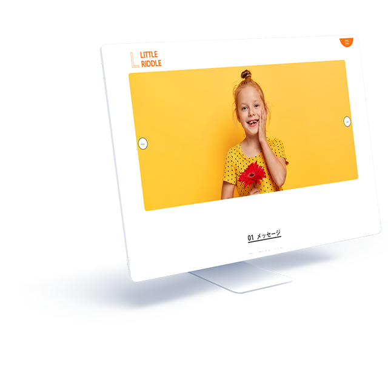

WORKS-05
05
Little Riddle
Little Riddle
ブランドサイト
- 担当範囲
- デザイン、コーディング
- 使用言語・ソフト
- HTML(LS)、CSS3、Swiper.js、figma、Photoshop
- 対応機種
- パソコン
- 制作期間
- デザイン5時間、コーディング18時間

メニューボタンを半円にしたり、リンクボタンや写真の角を丸くするなどし、子どもと親の双方に好まれるような優しいデザインを意識しました。
「02 アイテム」のスライド写真は、クリックするとモーダルウインドウが開き、商品の価格が確認できるほか、オンラインショップへ飛べるようにもしています。
- サイト概要
- 複数店舗を展開する子ども服ブランドのウェブサイト制作
- クライアント・依頼内容（想定）
- ブランドコンセプトは「一緒に、好きをみつけよう。」
子供服の購入は実際には親が行うことが多いが、商品の当事者はあくまでそれを着る子ども本人であるという思いから、子どもが親と一緒に興味を持ってサイトを閲覧し、服選びを楽しんでもらえるようなサイトとしたい。
子どもが成長し、自分で服を選び買うようになるまでの予行演習となるように、価格感や素材について親と一緒に学べるようなサイトにしてほしい。
- ターゲット層
- 小さい子ども（3～12歳前後）とその親（20～40代）
- サイトデザインの方向性
- サイト閲覧という行為自体が親子コミュニケーションの場となるようなサイトを目指す。
- 制作意図・工夫した点
- 子どもも親と一緒に主体となってサイトを閲覧することを想定し、文字は大きめで可読性の高いフォントを使用しました。
また文章は、優しく子どもに話しかけるような柔らかい言葉遣いで統一しました。
男女両方の商品を扱っているブランドであるため、メインカラーは性別問わず親しみやすいオレンジ色としています。 ファーストビューのスライドショーや、「04 よみもの」コンテンツのクリックで開閉するトグルメニューは、その操作性で子供に関心を抱かせるためのギミックとして入れました。